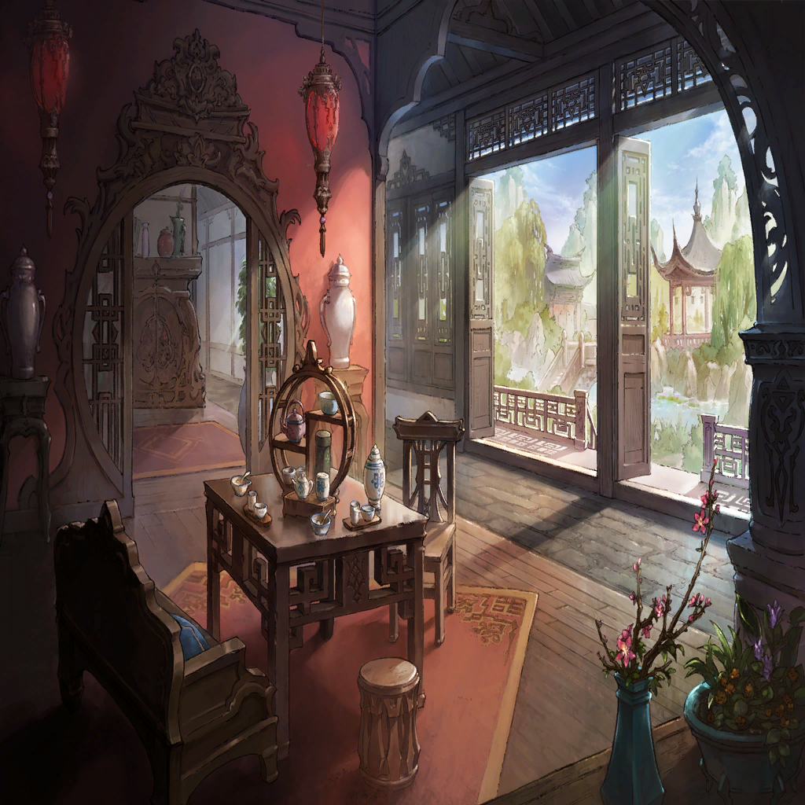

|
 |
| ？？？ |
ああっ、みーちゃん！
ちゃんと座ってーっ |
| ？？？ |
ほぉら。ぬいぐるみだよ～ |
| 狂言廻し |
みーちゃんのお気に入りだもんな～？ |
| ？？？ |
ふふっ、おとなしくなった |
| 狂言廻し |
さあさ続きだ！
オレの傑作紙芝居ッ！ |
|
| 狂言廻し |
これもお気に入りだろ？ |
|  |

ナァヂュ |
もぐもぐ。そういえば |
| Ｄ．リリィ |
もぐもぐ。なんだ |
ナァヂュ |
…叱らないのですか |
| Ｄ．リリィ |
…なんのことだ？ |
ナァヂュ |
ボクのこと |
| Ｄ．リリィ |
なぜ |
ナァヂュ |
叱られるようなことしましたよ、ボク
いっぱい、山ほど |
| Ｄ．リリィ |
叱ってなんになる |
ナァヂュ |
局長に無礼なことを、言いました
斬り合いでは煽りもしました
お家に押し掛けもしました。こうして |
| Ｄ．リリィ |
…相手が礼を尽くすべき人間かどうかは
立場や年齢で判断するものではない…
お前はその心に素直だっただけだろう |
ナァヂュ |
…しゃ、社会的には相応しくないでしょう |
| Ｄ．リリィ |
それを知っていて、あえて無礼を装うのなら
お前に悪意があるか、我に落ち度があるか
そのどちらかだろうな |
ナァヂュ |
きょ、局長に悪意を向けようなど！
ましてや落ち度など…！ |
| Ｄ．リリィ |
ならば、なぜ？ |
ナァヂュ |
ああ…、えと、えへへ |
| Ｄ．リリィ |
…斬り合いで相手を煽り挑発することは
それも戦術のひとつ |
| Ｄ．リリィ |
家に来られたのは…正直
た、助かっている |
ナァヂュ |
あ、うぅ、そう、ですか～…？ |
| Ｄ．リリィ |
…思えば、叱る家族もなかった
失って憤るほど
執着するものもなかった |
| Ｄ．リリィ |
ゆえに、怒りに任せれば知らぬうちに
いつか何かが…何かが壊れてしまうのでは
とも思うのだ… |
| Ｄ．リリィ |
臆病なのだ、我は |
ナァヂュ |
…変なことを、聞いてしまいましたね |
| Ｄ．リリィ |
…だが、そうだな
万一、ナァヂュを叱るべき時があれば… |
| Ｄ．リリィ |
諭してみよう
壊れぬよう |
ナァヂュ |
…！ |
ナァヂュ |
もぐ、もぐもぐ!! |
| Ｄ．リリィ |
そ、そんなに食事を詰め込むな
どうした。どうした |
ナァヂュ |
ごくん。ちょ、ちょっと嬉しくて…！
こう、誰かと食事しながら
とりとめのないことをお話しするのが |
ナァヂュ |
ふふ
家庭の食卓、というのは
こういうものなのでしょうか |
| Ｄ．リリィ |
…………どうであろうか |
ナァヂュ |
その家庭を守る為であれば
庭の外から糧を狩ってこなければなりません
戦士が戦って武功をあげなければなりません |
| Ｄ．リリィ |
… |
ナァヂュ |
局長。アナタの鍛錬が無駄でないことを
働きでお見せします。必ず |
| Ｄ．リリィ |
…………此度の大戦（おおいくさ） |
ナァヂュ |
奮戦してみせます |
| Ｄ．リリィ |
愚策だ |
ナァヂュ |
…！
何を言います |
| Ｄ．リリィ |
グリードダイクは、弱い |
ナァヂュ |
ご、御冗談を…………！ |
ナァヂュ |
獅子皇帝が…
何より局長がいらっしゃいます
どこに弱みなどあります…？ |
| Ｄ．リリィ |
他国に比べ、強き武器がないのだ |
 |
| Ｄ．リリィ |
精強な騎士団があるわけでもない
自然に恵まれているわけでもない |
| Ｄ．リリィ |
魔法の才に恵まれた者がいるわけでもなく
財を生む可能性のある国土が
特別広いわけでもない |
ナァヂュ |
…！ |
| Ｄ．リリィ |
国内の王座争いで国民は分断され
皇帝に従わぬ者は強き者も処断された |
ナァヂュ |
…お、仰せの通りです
しかし、だからこそです…！ |
ナァヂュ |
国内の兵力・財力は減り続けています
それもこれも国内の諍いが原因といえど
このままでは内部崩壊の恐れもあります…！ |
ナァヂュ |
ですが、だからこそ
外部の敵を叩く為と銘打ってでも
国家を一丸にまとめるべきなのです |
|
| Ｄ．リリィ |
負け戦だ
怪我人・死人が増えるだけ
数少ない兵力が失われるのみだ |
ナァヂュ |
勝ちの目は十分にあります！ |
ナァヂュ |
長年、ワダツミからの人材や交易品を募り
高値で買い上げて国力を削ぎました |
ナァヂュ |
ワダツミ王家を通さぬ売買ですから
金銭はその王家に反発する者たちにのみ
行きわたる… |
ナァヂュ |
金銭が届かぬ下層市民は困窮し始め
グリードダイクに人や品を吸い上げられ
ワダツミ王家に、その責任を求めだす |
 |
ナァヂュ |
その結果、現在のワダツミでは
国の貧しさに耐えきれなくなった民たちが
内乱を起こし始めています |
ナァヂュ |
この混乱に乗じて一気呵成に
グリードダイクが攻め込む
士気の擦り減ったワダツミなど敵ではない |
|
| Ｄ．リリィ |
虐殺だ…！ それでは |
ナァヂュ |
失ったものを得る為の戦です！ |
ナァヂュ |
戦わなければ…
戦士の存在意義はないでしょう…!? |
| Ｄ．リリィ |
ナァヂュ |
ナァヂュ |
使えない道具は捨てられる
そうでしょう…？ |
 |
| ミツ |
手毬は見つかりましたか？ |
| Ｄ．リリィ |
…………顔色が悪いぞ |
| ミツ |
ここの灯りのせいでは？ |
| Ｄ．リリィ |
…声も、かすれている |
| ミツ |
… |
| ミツ |
伏魔殿ですね。ここは |
| Ｄ．リリィ |
…………まさに |
| ミツ |
弱き者は食われるのみと刷り込まれ
戦い続けることこそ
戦士の誇りと信じさせられています |
| ミツ |
戦士たちは日々身を削り、心を擦り減らし
まるで悪魔かお化けに憑りつかれたように
血を求め続けています |
| ミツ |
私も、彼らから見れば
悪魔かもわかりません |
| Ｄ．リリィ |
そ、そなたは…違う |
| ミツ |
戦士たちが傷を負っても
すぐさま私に癒されて
また戦場へ駆り出される… |
| ミツ |
休む暇なく戦い続ける“のろい”がかかる
躰の傷は治ろうと
心はそうはいかないのに |
| Ｄ．リリィ |
… |
| ミツ |
心が壊れれば
癒す方法などありはしないのに |
| Ｄ．リリィ |
…………これよりは
死体が増える |
| ミツ |
まあ。今以上にですか？ |
| Ｄ．リリィ |
…そなたは
死体を、蘇らせることは
できるのか…？ |
| ミツ |
屍につける薬はありません |
| ミツ |
相手の傷を私の心に映し
その傷を治して相手へ移すのが
私の“癒しの呪術” |
| ミツ |
死までは癒せません |
| Ｄ．リリィ |
………… |
| ミツ |
まさか
御仕事で死を求められているのですか…？ |
| Ｄ．リリィ |
…仕事の“道具”とは
得てしてそういうものだ |
| Ｄ．リリィ |
この国では現状、最も誇り高き役目… |
| ミツ |
そうお思いですか？
今もまだ |
| Ｄ．リリィ |
… |
| ミツ |
…………嗚呼 |
| Ｄ．リリィ |
…刀を抜くことなく終わる戦いは、ない |
| ミツ |
…貴方は、心ここにあらず
ずっと、そう感じていましたが
違いますね…？ |
| Ｄ．リリィ |
…………何がだ…？ |
| ミツ |
元の鞘に戻りたいのでは？ 貴方は |
| Ｄ．リリィ |
――――…っ |
| ミツ |
刀を抜かず勝ちを得たい
抜くのであれば、居場所を守る為に…と |
| Ｄ．リリィ |
…もう、戻れぬ |
| ミツ |
ああなりたい、こうなりたい
そう思うのは人の“心”の必定
否定できることではございません |
| ミツ |
“品”や“物”、“道具”には
到底抱けぬ…『心変わり』 |
| Ｄ．リリィ |
…………信念を曲げては
不誠実とは思わぬか |
| ミツ |
一度決めた道を突き進む
それも人生 |
| ミツ |
過ちを振り返り、道を戻る…
岐路から道を変えて進む。それも人生 |
| ミツ |
眼前の人死（ひとじに）に心を痛める…
それを誰が責められましょうか |
| Ｄ．リリィ |
…散々、人斬りを演じておいて
今更…！ |
| ミツ |
“物”も
愛されれば魂が宿ると言います
ワダツミでは |
| ミツ |
魂が宿ってはいませんか？
貴方という器には |
| ミツ |
迷い果てることはありません。きっと
どれだけ間違えど。行き止まれど |
| ミツ |
立ち戻る故郷さえあれば |
| Ｄ．リリィ |
…………！ |
| ミツ |
たとえ
意気地なしの臆病者であっても |
 |

オライオン |
道草か。リリィ |
| Ｄ．リリィ |
… |
オライオン |
…………予定のない訪問は
正直迷惑なのだがな |
| Ｄ．リリィ |
職務を降りるに当たって、御挨拶をと |
オライオン |
…………律儀な奴よ |
| Ｄ．リリィ |
ワダツミへの攻め入りを
考え直してはくださいませぬか |
オライオン |
くどい |
| Ｄ．リリィ |
友好国の民を殺戮など…
一方的な侵略となれば国際問題
聖教騎士団も黙ってはいません |
オライオン |
侵略を正当化する理由など
いくらでも用意されている |
| Ｄ．リリィ |
戦士の数は足らない…
多くの民が傷つき、屍のみが増えます |
オライオン |
そうであろうな |
| Ｄ．リリィ |
命は限られております…！ |
オライオン |
命も、心も、意志も
なくとも成り立つ戦の術はないか
考えておるのよ |
| Ｄ．リリィ |
…………そんな方法
ありはしないでしょう…？ |
オライオン |
戦において弱みや恐れを抱き
傷を負って使い物にならなくなるような
脆弱な者は、本来不要よ |
オライオン |
必要なのはあくまで、純粋なる“力” |
オライオン |
心すら思うようにできる――改造兵士
命すら超越する――不死者
今、我が国ではその研究が進んでいる |
| Ｄ．リリィ |
…!? |
オライオン |
弱き兵がいくら死のうと
国力には一切傷がつかず
戦うことができるようになる |
オライオン |
リリィ
貴様にも今後は楽をさせてやれる |
| Ｄ．リリィ |
…！ ですが戦いが始まれば
今でさえ限界を迎えている癒し手は
間違いなく力尽きます！ |
オライオン |
傷を治す道具となる巫女は
またワダツミから奪えば良かろう |
| Ｄ．リリィ |
今、戦いに駆り出される兵は…!?
我が国内の争いで精神すら摩耗させた兵が
大勢おります…！ |
| Ｄ．リリィ |
傷や血の流れぬ方策を、どうか…!! |
オライオン |
血を流させ続けてきた貴様に
そんな忠告をされるとは |
| Ｄ．リリィ |
…！ |
オライオン |
長大な歴史の奔流は止められぬよ |
| Ｄ．リリィ |
………… |
オライオン |
問答は終わりだ |
| Ｄ．リリィ |
…左様ですな |
オライオン |
…………刀を抜こうと？ |
| Ｄ．リリィ |
は |
オライオン |
真理を述べたつもりであったがな
私としては。精一杯の |
| Ｄ．リリィ |
陛下の言葉はすべて、グリードダイクが為
一理あることは否定できませぬ
ですが…！ |
オライオン |
リリィ…
何が、貴様を変えさせた？ |
| Ｄ．リリィ |
変わってはならないと、思っておりました
ずっと…務めを果たすのみと |
| Ｄ．リリィ |
ただ職務の“道具”になればよいと
己の“心”を捨てて |
| Ｄ．リリィ |
だが――…！ |
| 狂言廻し |
さあさお立合い！ |
| Ｄ．リリィ |
心にもない行いだ
誰も生かせぬ刀を振るうなど |
| 狂言廻し |
使われ続けた“道具”が今！
多くの鋼とぶつかり鍛えられた刃が今！ |
| Ｄ．リリィ |
歴史の流れが止まらぬならば |
| 狂言廻し |
歴史の大河に突き立った！ |
| Ｄ．リリィ |
我は、貴方を止める |
オライオン |
慢心甚だしい…！
この皇帝を止めると？
懐刀ごときが？ |
| Ｄ．リリィ |
… |
オライオン |
一度決めた信念はどうする？
己が役目はどうするつもりだ!? |
| Ｄ．リリィ |
皇都の保安を守るが役目
ならば切った張ったは納めなければ |
オライオン |
…！
判官びいきの自己陶酔も大概にせよ…！
己の庭を見捨てるというのか!? |
| Ｄ．リリィ |
我儘（わがまま）だとしても…………！ |
オライオン |
そのツラで駄々をこねるとは見苦しいッ！ |
| Ｄ．リリィ |
欲する物を力づくで奪う
その行いこそ―― |
| Ｄ．リリィ |
児戯に等しい!! |
オライオン |
…！ |
| Ｄ．リリィ |
餓鬼・畜生がなさること！ |
オライオン |
もはや埒があかぬわ！ |
| Ｄ．リリィ |
左様 |
オライオン |
ならば！ |
| Ｄ．リリィ |
さらば――御免 |